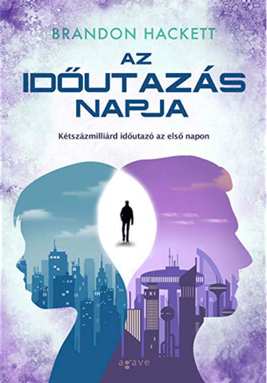
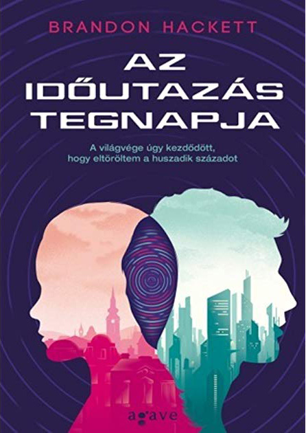

Brandon Hackett
1975-ben született, közgazdász. Első novelláit (az Én, a halhatatlan c. novellaciklust) a Cherubion Kiadó jelentette meg, egyik tagját 2003-ban Zsoldos Péter-díjjal jutalmazta a zsűri.
A ciklus (mint ahogy a későbbi regények is) Marcus Barbess történetét meséli el, aki egyszerű földi emberből, családapából egy tragikus baleset során halhatatlan szuperhőssé válik egy rejtélyes faj beavatkozása által. Alakja köré nem csak a Halhatatlan novellaciklus szerveződik, hanem kisebb-nagyobb szerepben felbukkan a két Gyarmatbirodalomkönyvben is (A negyedik gyarmat, Az ötödik gyarmat). A duológia egy idegen fajokból álló birodalom szabadságharcait meséli el, amikbe végül az emberiség is beavatkozik.
Ezekben a regényekben mutatkozik meg igazán a Markovicsra jellemző epikusság, hősei egész népeket irányítanak, de történetük egyben családtörténet is, számos visszatérő motívummal. A Gyarmatbirodalom-regényekből ágazik le a másik duológia történetszála, az ott megismert főhősök távoli leszármazottainak sorsát kísérhetjük figyelemmel az Erdőhold-ciklusban, ahol egy kivándorolt nép új hazát keres magának, s végül erőszakkal foglal is egyet, megtámadva és legyőzve a biológiailag szinte teljesen azonos, de technikailag alacsonyabb szinten álló őslakókat.
Az időutazás napja
2021. november. Amikor az első időgép működésbe lép, kétszázmilliárd időutazó jelenik meg a Földön. Az időutazás napját ünneplik, az első pillanatot, ameddig vissza lehet utazni a jövőből.
Az esemény eltörli az ismert világot: megszűnik a pénz, működésképtelenné válnak a kormányok, bárki számára hozzáférhető lesz minden jövőbeli technológia, köztük az időutazás. Tetszőleges jövőbeli évbe utazhatunk, egészen az időfolyam végéig. Ennek azonban hatalmas ára van, ugyanis az idő veszélyes játékszer.
Beregi Ádám él-hal a családjáért, ám az időutazás napján valaki a jövőből elrabolja a kisfiát és a feleségét, Enikőt. Ádám a kaotikus és folyton változó időfolyamban, őrült technológiák, valamint mesterséges mikrouniverzumok birodalmában próbálja megtalálni őket.
Az időgép feltalálója, Neil Jarrison különös, magának való ember. Bár 2612-ben kivégzik, mégis sokan szeretnének a nyomára bukkanni, mert olyan tudás birtokosa, amely megmentheti a világot. Vagy el is pusztíthatja. Csakhogy a feltaláló mindig egy lépéssel üldözői előtt jár, és úgy tűnik, kizárólag egyvalaki érdekli: egy Rebeca nevű titokzatos nő, aki minden rejtély kulcsa lehet.
A Brandon Hackett néven író Markovics Botond sodró tempójú, eredeti ötletekkel teli regénye egészen újfajta megközelítése az időutazás témájának.
Eredeti megjelenés éve: 2014
Az időutazás tegnapja
A legtöbben úgy tudják, hogy csak az első időgép működésbe lépésének pillanatáig lehet visszautazni az időben: ez a nap az időutazás napja. Csakhogy létezik egy másik időtechnológia is, amely ennél a napnál jóval korábban került a Földre egy fejlett, idegen civilizáció jóvoltából, akiknek sikerült kijutni a saját időfolyamuk összeomlásából, de ezért súlyos árat fizettek.
Az időutazás napja eseményei után másfél évtizeddel Rebeca Szatosi ennek a technológiának a segítségével elindul a múltba, hogy találkozzon édesapjával, az időben eltűnt fizikussal, és ezzel akaratlanul is olyan események láncolatát indítja el, amelyek az emberi civilizáció jelenének, jövőjének és múltjának megsemmisüléséhez vezethetnek.
Beregi Bálint, az időutazás feltalálója fiatal önmagával együtt dolgozik az időutazás természetének megértésén és az időfolyam összeomlásának megállításán, de még úgy sincs nagy reményük a sikerre, hogy összefognak egy 20. századból kiemelt tudóscsapattal, köztük Albert Einsteinnel és Neumann Jánossal. Az idő túl gyorsan fogy, ráadásul a Maxwell-démonoknak nevezett idegen civilizáció, valamint a Haugen-dimenzió mikrouniverzumában, egy paradoxon-technológia révén létrejött poszthumán szervezet is útjukat állja.
Eredeti megjelenés éve: 2015